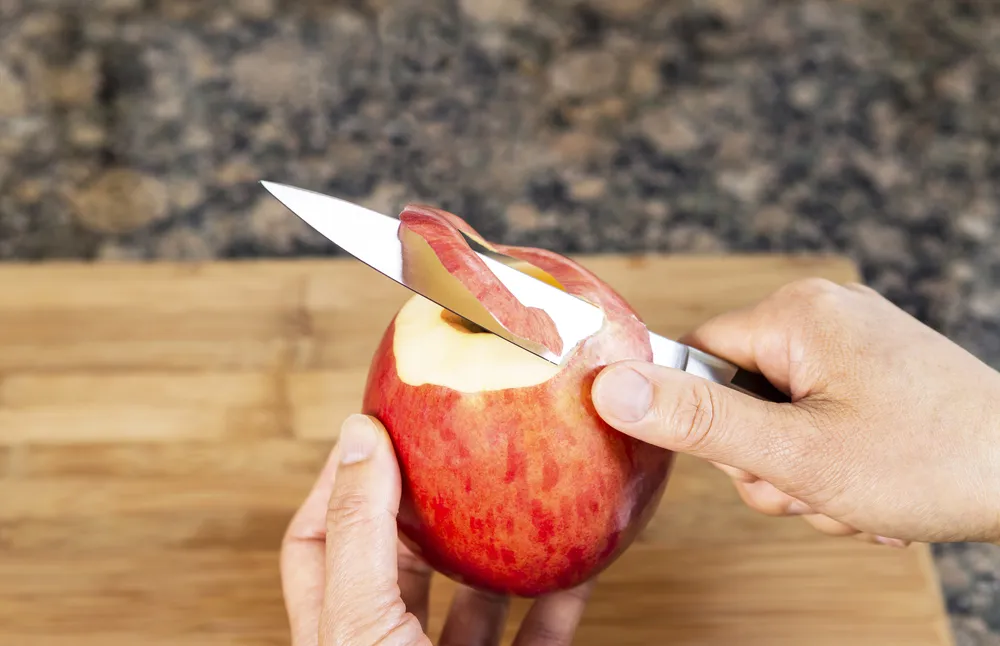

Kitchen Tools That Make Eating Healthy Easier

Eating healthy isn’t always easy. To help you and your family stay fit, you need to eat lots of healthy foods—like fruits, vegetables, lean meats and whole grains. But you also need to cook healthy, and to do that you’ll need a variety of kitchen tools that promote healthy eating.
So, what makes these tools so special? It’s really quite simple: They’re designed to make cooking healthy easier and more interesting than cooking without them. But it’s not just about staying trim and fit: They’re also essential in keeping your family from getting sick.
Mini Colanders
Miniature colanders do one thing really, really well: they make it easier for you and your family to wash food. Even better: they make it really easy for you and your family to wash super-healthy fruits and vegetables.
That makes them useful in two very important ways: they promote the preparation and consumption of healthy foods and they make it easier to wash those foods, removing germs, pesticides and other things you wouldn’t want to see your family members eating. So, make sure to have at least a few mini colanders on hand at all times.
Air Popper
It’s a well-established fact that fruits and vegetables make for the perfect healthy snacks. But we don’t always feel like eating fresh produce. Kids are especially stubborn when it comes to snacking this way. And who can blame them? After all, variety is the spice of life.
For a unique and healthy snack, try preparing your very own popcorn. To make this snack both fresh and healthy, buy your own popcorn kernels and prepare them using an air popper. In this way you can limit the amount of oil, butter and salt that’s used, ensuring this remains a healthy, high-fibre snack.
Tinfoil
Tinfoil may not fit the mold of your typical kitchen tool—after all, you typically throw it away after every use—but there’s no denying that it’s a useful tool in the kitchen. Above all, it makes cooking healthy food items, like vegetables, really quite simple.
Simply toss some vegetables (i.e., broccoli, carrots, cauliflower or beets) in a little olive oil and add salt, pepper, or garlic. Wrap in tinfoil, throw the mixture in the oven, and wait about half an hour. You and your family will be very pleased with the result. Plus, in many states and provinces, tinfoil can be recycled, which makes it an eco-friendly choice as well.
Mini Cutting Boards
Cutting boards help keep your counters looking new while preventing your food from getting all over the place. On top of that, they make it easier to cut and cook more produce, like fruits and vegetables.
However, cutting boards also play an essential role in keeping your family safe. They can be easily washed—even tossed in the dishwasher—thereby lowering the chances of germs being spread. That’s particularly important if your family cooks and eats a lot of meat, and especially poultry. That makes it worth having at least a few mini cutting boards in your kitchen.
Digital Cooking Thermometer
There are few things that scare parents more than the idea of making their kids (and other family members) sick by feeding them meat that’s not thoroughly cooked. It’s important to remember that poultry, like chicken, should never be consumed before it’s cooked right through.
A cooking thermometer can be a big help with this. Not only will it tell you the internal temperature of your meat, but it will give you a clear indication of when your meat is safe to eat. In other words, it can play a crucial role in keeping your family safe and healthy.
Fruit and Vegetable Basket
You know what can really help encourage your family to eat fruits and vegetables? Make them readily available. Even better: make that fresh produce look good by putting them on display with a fruit and vegetable basket.
Many fruits and veggies are easy to eat when they’re put on display in this way. So, use your basket to make it easy for your family members to grab bananas, oranges, apples, grapefruit, tomatoes, pears, clementines, tangerines, carrots, celery, and other healthy food items. The more you can make available, the better.
Paring Knives
Like many of the other items on this list, paring knives play an important role in making it easier to eat fruits and vegetables. Paring knives are small and nimble, helping you and your family prepare fresh produce for cooking or immediate consumption.
The trick, of course, is to properly instruct any younger family members to use paring knives in a safe and thoughtful way. While it’s wise to have a few paring knives in your kitchen, don’t make them available to any children who can’t be trusted to use them in a mature way.
Rice Cooker
Brown rice is an excellent way to get the fiber we need to stay healthy. High-fiber foods like brown rice keep our digestive system functioning in an ideal way, helping us stay mentally and physically energized and ready to take on the day. A rice cooker makes it super-easy to prepare brown rice.
You simply add the rice, water, salt and any other necessary ingredients, and set the device to the proper heat level. And t he best news: you can actually use a rice cooker to produce other healthy items, like quinoa and millet.
Source: https://activebeat.com/diet-nutrition/8-kitchen-tools-that-make-eating-healthy-easier/